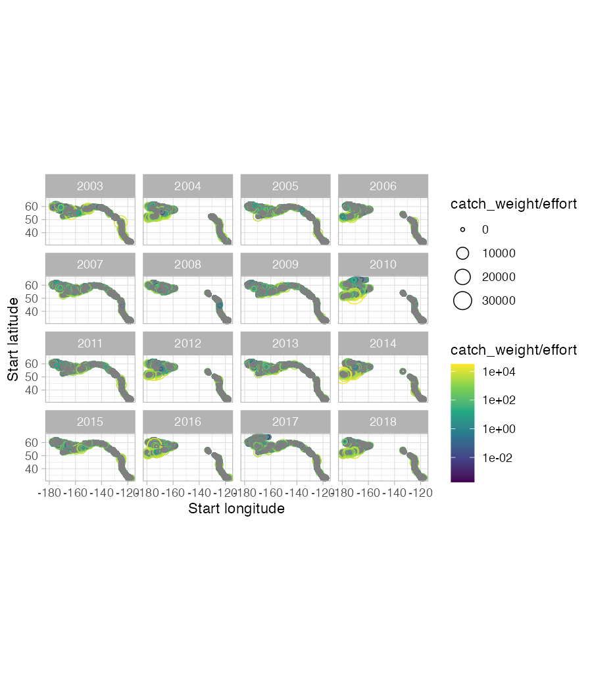

surveyjoin.RmdThis vignette represents an introduction to using the
surveyjoin package. We’ll load the package, along with
dplyr and ggplot2 for data manipulation and
plotting.
library(surveyjoin)
library(dplyr)
#>
#> Attaching package: 'dplyr'
#> The following objects are masked from 'package:stats':
#>
#> filter, lag
#> The following objects are masked from 'package:base':
#>
#> intersect, setdiff, setequal, union
library(ggplot2)The surveyjoin package contains several processing
functions that will download the survey data files locally, and create a
connection to the SQLite database. The cache_data()
function takes 5-10 minutes to run, and needs to be only run every time
the raw data is refreshed (a new year of survey data becomes
available).
Several helper functions have been included to provide more information on the metadata, survey shapefiles, and links to the original data. Each of these returns a dataframe with a URL for each of our three regions (“afsc”, “pbs”, “nwfsc”).
The core function of the package is get_data. This
allows for querying by species (using common names - “common”,
scientific names - “scientific”, or ITIS identifiers - “itis_id”),
regions, surveys, or years – each of these may be a single value or
vector of values. We could get data for sablefish from all Alaska
surveys in the the last decade with
d <- get_data(common = "sablefish", years = 2013:2023, regions="afsc")As a second example, we could get data coastwide for Arrowtooth flounder and plot it with the following code. We’ll constrain it to years 2003-2018 for plotting purposes (though the earliest year of data is 1980).
d <- get_data(common = "arrowtooth flounder", years = 2003:2018)
g <- d |>
ggplot(aes(
lon_start,
lat_start,
colour = catch_weight / effort,
size = catch_weight / effort
)) +
geom_point(pch = 21) +
facet_wrap(~year) +
scale_colour_viridis_c(trans = "log10") +
theme_light() +
coord_fixed() +
xlab("Start longitude") +
ylab("Start latitude")
ggsave(g, filename = "map-example.png",
width = 6, height = 7, dpi = 150)